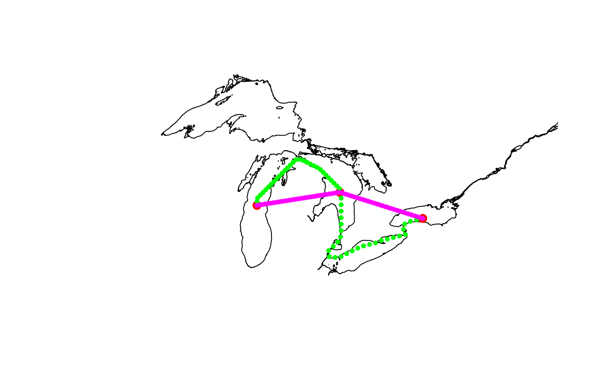

Interpolate new positions within a spatiotemporal path data
Source:R/vis-interpolate_path.r
interpolate_path.RdInterpolate new positions within a spatiotemporal path data set (e.g., detections of tagged fish) at regularly-spaced time intervals using linear or non-linear interpolation.
Usage
interpolate_path(
det,
trans = NULL,
start_time = NULL,
int_time_stamp = 86400,
lnl_thresh = 0.9,
out_class = NULL,
show_progress = TRUE
)Arguments
- det
An object of class
glatos_detectionsor data frame containing spatiotemporal data with at least 4 columns containing 'animal_id', 'detection_timestamp_utc', 'deploy_long', and 'deploy_lat' columns.- trans
An optional transition matrix with the "cost" of moving across each cell within the map extent. Must be of class
TransitionLayer. A transition layer may be created from a polygon shapefile using make_transition.- start_time
specify the first time bin for interpolated data. If not supplied, default is first timestamp in the input data set. Must be a character string that can be coerced to 'POSIXct' or an object of class 'POSIXct'. If character string is supplied, timezone is automatically set to UTC.
- int_time_stamp
The time step size (in seconds) of interpolated positions. Default is 86400 (one day).
- lnl_thresh
A numeric threshold for determining if linear or non-linear interpolation shortest path will be used.
- out_class
Return results as a data.table or tibble. Default returns results as data.frame. Accepts
data.tableortibble.- show_progress
Logical. Progress bar and status messages will be shown if TRUE (default) and not shown if FALSE.
Details
Non-linear interpolation uses the gdistance package
to find the shortest pathway between two locations (i.e.,
receivers) that avoid 'impossible' movements (e.g., over land for
fish). The shortest non-linear path between two locations is
calculated using a transition matrix layer that represents the
'cost' of an animal moving between adjacent grid cells. The
transition matrix layer (see gdistance) is created from
a polygon shapefile using make_transition or from a
RasterLayer object using transition. In
make_transition, each cell in the output transition layer
is coded as water (1) or land (0) to represent possible (1) and
impossible (0) movement paths.
Linear interpolation is used for all points when
trans is not supplied. When trans is supplied,
then interpolation method is determined for each pair of
sequential observed detections. For example, linear interpolation
will be used if the two geographical positions are exactly the
same and when the ratio (linear distance:non-linear distance)
between two positions is less than lnl_thresh. Non-linear
interpolation will be used when ratio is greater than
lnl_thresh. When the ratio of linear distance to
non-linear distance is greater than lnl_thresh, then the
distance of the non-linear path needed to avoid land is greater
than the linear path that crosses land. lnl_thresh can be
used to control whether non-linear or linear interpolation is
used for all points. For example, non-linear interpolation will
be used for all points when lnl_thresh > 1 and linear
interpolation will be used for all points when lnl_thresh
= 0.
All linear interpolation is done by stats::approx() with
argument ties = "ordered" controlling how tied x values
are handled. See stats::approxfun().
Examples
#--------------------------------------------------
# EXAMPLE #1 - simple interpolate among lakes
# get polygon of the Great Lakes
data(great_lakes_polygon) # glatos example data
plot(sf::st_geometry(great_lakes_polygon), xlim = c(-92, -76))
# make sample detections data frame
pos <- data.frame(
animal_id = 1,
deploy_long = c(-87, -82.5, -78),
deploy_lat = c(44, 44.5, 43.5),
detection_timestamp_utc = as.POSIXct(c(
"2000-01-01 00:00",
"2000-02-01 00:00", "2000-03-01 00:00"
), tz = "UTC")
)
# add to plot
points(deploy_lat ~ deploy_long, data = pos, pch = 20, cex = 2, col = "red")
# interpolate path using linear method
path1 <- interpolate_path(pos)
nrow(path1) # now 61 points
#> [1] 61
sum(path1$record_type == "interpolated") # 58 interpolated points
#> [1] 58
# add linear path to plot
points(latitude ~ longitude, data = path1, pch = 20, cex = 0.8, col = "blue")
# load a transition matrix of Great Lakes
# NOTE: This is a LOW RESOLUTION TransitionLayer suitable only for
# coarse/large scale interpolation only. Most realistic uses
# will need to create a TransitionLayer; see ?make_transition.
data(greatLakesTrLayer) # glatos example data; a TransitionLayer
# interpolate path using non-linear method (requires 'trans')
path2 <- interpolate_path(pos, trans = greatLakesTrLayer)
#> Calculating least-cost (non-linear) distances... (step 1 of 3)
#>
|
| | 0%
|
|=================================== | 50%
|
|======================================================================| 100%
#>
#> Starting non-linear interpolation... (step 3 of 3)
#>
|
| | 0%
|
|=================================== | 50%
|
|======================================================================| 100%
#>
#> Finalizing results.
# add non-linear path to plot
points(latitude ~ longitude,
data = path2, pch = 20, cex = 1,
col = "green"
)
# can also force linear-interpolation with lnlThresh = 0
path3 <- interpolate_path(pos, trans = greatLakesTrLayer, lnl_thresh = 0)
# add new linear path to plot
points(latitude ~ longitude,
data = path3, pch = 20, cex = 1,
col = "magenta"
)

#--------------------------------------------------
# EXAMPLE #2 - walleye in western Lake Erie
if (FALSE) { # \dontrun{
# get example walleye detection data
det_file <- system.file("extdata", "walleye_detections.csv",
package = "glatos"
)
det <- read_glatos_detections(det_file)
# take a look
head(det)
# extract one fish and subset date
det <- det[det$animal_id == 22 &
det$detection_timestamp_utc > as.POSIXct("2012-04-08") &
det$detection_timestamp_utc < as.POSIXct("2013-04-15"), ]
# get polygon of the Great Lakes
data(great_lakes_polygon) # glatos example data; an sf object
# convert polygon to terra::spatVector
great_lakes_polygon <- terra::vect(great_lakes_polygon)
# crop polygon to western Lake Erie
maumee <- terra::crop(great_lakes_polygon,
y = terra::ext(-83.7, -82.5, 41.3, 42.4)
)
plot(maumee, col = "grey")
points(deploy_lat ~ deploy_long,
data = det, pch = 20, col = "red",
xlim = c(-83.7, -80)
)
# make transition layer object
tran <- make_transition(sf::st_as_sf(maumee), res = c(0.1, 0.1))
# plot to check output
plot(tran$rast, xlim = c(-83.7, -82.0), ylim = c(41.3, 42.7))
plot(maumee, add = TRUE)
# not high enough resolution- bump up resolution, will take some time
tran1 <- make_transition(sf::st_as_sf(maumee), res = c(0.001, 0.001))
# plot to check resolution- much better
plot(tran1$rast, xlim = c(-83.7, -82.0), ylim = c(41.3, 42.7))
plot(maumee, add = TRUE)
# add fish detections to make sure they are "on the map"
# plot unique values only for simplicity
foo <- unique(det[, c("deploy_lat", "deploy_long")])
points(foo$deploy_long, foo$deploy_lat, pch = 20, col = "red")
# call with "transition matrix" (non-linear interpolation), other options
# note that it is quite a bit slower than linear interpolation
pos2 <- interpolate_path(det,
trans = tran1$transition,
out_class = "data.table"
)
plot(maumee, col = "grey")
points(latitude ~ longitude, data = pos2, pch = 20, col = "red", cex = 0.5)
} # }